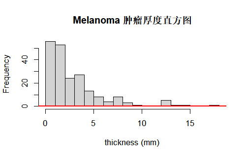
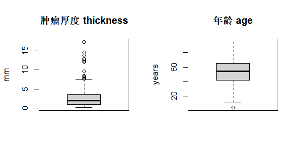
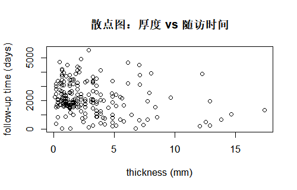
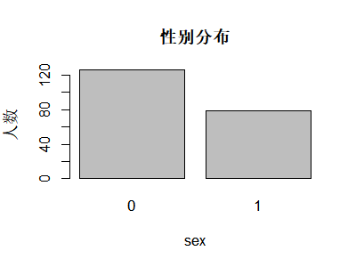
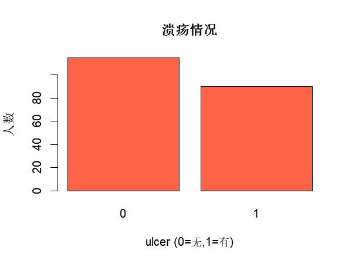

03 · 描述性统计与数据概览
一、描述性统计与数据概览
在做假设检验和建模之前，第一步总是：先弄清楚手里的数据“长什么样”。描述性统计（descriptive statistics）就是围绕三个问题展开：
- 中心在哪里？——集中趋势
- 差异有多大？——离散程度
- 形状是什么样？——分布形状
为了与第 02 章保持一致，本章也继续使用 MASS 包中的恶性黑色素瘤数据集 Melanoma 作为例子，直接在第 02 章构造/清洗过的数据基础上做“描述”。在 R 中，只需加载 MASS 包并执行 data(Melanoma) 即可获得同样的数据。
1.1 例子数据集：Melanoma
Melanoma 是一个经典的恶性黑色素瘤（皮肤肿瘤）随访队列数据集，每一行是一位患者的记录，主要字段含义如下（与第 02 章使用的是同一份数据）：
time：随访时间，一般以“天（days）”计，从手术切除到结局（死亡或随访截止）的时间长度。status：结局状态，常见编码为 0=仍存活/随访中，1=死于黑色素瘤，2=死于其他原因。在做生存分析或描述性统计时，常需要区分“肿瘤相关死亡”和“非肿瘤死亡”。sex：性别，原始数据中为 1=男性、0=女性。在第 02 章中，我们曾把该变量标准化为“男/女”编码，这里只要知道它代表患者性别即可。age：手术时年龄，单位为岁，是后续描述和建模中最常用的连续变量之一。year：手术年份，比如 1970、1971 等，可以用于考察不同年代诊疗水平变化。thickness：肿瘤厚度（Breslow thickness），是恶性黑色素瘤预后最重要的连续型指标之一，数值越大往往提示肿瘤更加进展、预后更差。ulcer：是否存在溃疡（0=无，1=有），是一个 0/1 分类变量，溃疡常被视为不良预后因素。
在后文的所有代码示例中，如果未特别说明，可以直接理解为“在 Melanoma 上进行的描述性统计”。当你自己做项目时，也可以把 Melanoma 换成自己的数据框，把 thickness、age 等变量名替换成项目里的实际字段名。
# 载入 MASS 包并加载 Melanoma 数据
options(repos = c(CRAN = "https://mirrors.tuna.tsinghua.edu.cn/CRAN/"))
install.packages("MASS") # 如果已安装会提示跳过
library(MASS)
data(Melanoma)
head(Melanoma)
summary(Melanoma)1.2 为什么要先“描述”再建模
- 直接套用检验/模型，可能在严重偏态、极端值很多的数据上得出“看起来显著”的错误结论。
- 描述性统计帮你发现：中心在哪里、数据是否合理、是否存在可疑值或分层结构。
- 决定用均值±标准差还是中位数（IQR）。
- 决定用 t 检验还是非参数检验。
- 决定是否需要对数变换或标准化。
1.3 变量类型与合适的指标
不同类型的变量，适合的描述指标不同：
二、描述数据的“集中趋势”
集中趋势描述“数据大致集中在哪个水平”。常用的三个指标是：平均数、中位数、众数。
2.1 平均数、中位数、众数
- 平均数（mean）：所有观测值相加除以个数，容易理解，但对极端值异常敏感。
- 中位数（median）：排序后正中间的值，对偏态和极端值更稳健。
- 众数（mode）：出现次数最多的取值，常用于分类变量。
在 Melanoma 中，可以把 thickness 理解为一个典型的连续变量，把 sex 或 ulcer 理解为分类变量。下面的代码示例中，我们用肿瘤厚度 thickness 来计算均值和中位数，用 sex 来演示众数的概念。
library(MASS)
data(Melanoma)
# 以肿瘤厚度 thickness 为例（连续变量）
x <- Melanoma$thickness
mean(x) # 平均数
median(x) # 中位数
# 众数：适用于分类变量，这里示例性别 sex
get_mode <- function(v) {
tb <- table(v)
names(tb)[which.max(tb)]
}
get_mode(Melanoma$sex)2.2 医学场景下如何报告
在医学论文或研究报告中，描述性统计通常出现在“基线特征表”（常被称作 Table 1）中。对于恶性黑色素瘤这样的肿瘤队列，最常见的变量包括年龄、肿瘤厚度、是否溃疡以及性别、结局状态等。
常见的写法有：
- 近似正态的连续变量：报告“均值 ± 标准差”（例如：年龄 56.2±8.4 岁）。
- 偏态分布的连续变量：报告“中位数（IQR）”（例如：住院天数 7（4, 12）天）。
- 分类变量：报告“频数（比例）”（例如：男性 60 例（55.6%））。
对 Melanoma 而言，可以像下面这样先计算厚度的均值/标准差与中位数/IQR，然后再用 sprintf() 拼成论文中常见的呈现格式：
# 用 Melanoma 构造类似“表 1”中的一行
library(MASS)
data(Melanoma)
# 以 thickness 为例
x <- Melanoma$thickness
mean_SL <- mean(x); sd_SL <- sd(x)
med_SL <- median(x); iqr_SL <- IQR(x)
sprintf("thickness: %.2f ± %.2f mm", mean_SL, sd_SL)
sprintf("thickness: %.2f (%.2f, %.2f)",
med_SL,
quantile(x, 0.25),
quantile(x, 0.75))三、描述数据的“离散程度”
离散程度回答“数据之间差异有多大”。同样的平均值，离散程度不同，意味着临床上可能完全不同的稳定性。例如，两个黑色素瘤队列平均厚度都为 2 mm，但一组厚度非常集中在 1.5–2.5 mm，另一组从 0.2 mm 到 10 mm 都有，那么后者的病情异质性显然更大。
3.1 极差、方差与标准差
- 极差（Range）：最大值 − 最小值，直观但受极端值影响极大。
- 方差（Variance）：每个值相对平均数的平方偏差的平均。
- 标准差（SD）：方差的平方根，单位与原变量相同，更易解释。
# 仍以 thickness 为例
library(MASS)
data(Melanoma)
x <- Melanoma$thickness
max(x, na.rm = TRUE) - min(x, na.rm = TRUE) # 极差
var(x, na.rm = TRUE) # 方差
sd(x, na.rm = TRUE) # 标准差3.2 四分位距与变异系数
- 四分位距（IQR）：Q3 − Q1，反映中间 50% 数据范围，比极差稳健。
- 变异系数（CV）：\(CV = sd/mean\)，用于比较不同量纲下的相对离散程度。
library(MASS)
data(Melanoma)
x <- Melanoma$thickness
IQR(x, na.rm = TRUE)
q <- quantile(x, c(0.25, 0.5, 0.75), na.rm = TRUE)
q
cv <- sd(x, na.rm = TRUE) / mean(x, na.rm = TRUE)
cv3.3 医学例子中的“波动解读”
同样的平均值，标准差或 IQR 不同，在医学上的含义可能截然不同：
- 血压均值 130 mmHg，标准差 5 vs 25：前者更稳定，后者可能提示血压控制不良或测量不规范。
- 在 Melanoma 中，如果两组患者的肿瘤厚度均值都约为 2 mm，但一组 IQR 为 1.5–2.5 mm，另一组 IQR 为 0.5–6.0 mm，则后者包含了更多“极薄”和“极厚”的肿瘤亚型，治疗策略和预后判断都需要更加谨慎。
四、描述数据的“分布形状”
分布形状不仅影响描述方式，还决定后续推断方法能否使用（例如 t 检验更适合近似正态的情形）。在 Melanoma 中，thickness 和 time（随访时间）往往呈现明显的右偏分布，这在生存数据与肿瘤指标中非常常见。
4.1 偏度与峰度
- 偏度（Skewness）：衡量分布的不对称性，右偏/左偏。
- 峰度（Kurtosis）：衡量分布的尖峭程度与尾部厚度。
skewness <- function(v) {
v <- v[is.finite(v)]
m <- mean(v); s <- sd(v)
mean((v - m)^3) / (s^3)
}
kurtosis <- function(v) {
v <- v[is.finite(v)]
m <- mean(v); s <- sd(v)
mean((v - m)^4) / (s^4)
}
library(MASS)
data(Melanoma)
skewness(Melanoma$thickness)
kurtosis(Melanoma$thickness)4.2 频数/频率分布与分箱
对连续变量，可以通过分箱得到频数/频率表：
library(MASS)
data(Melanoma)
x <- Melanoma$thickness
bins <- cut(x, breaks = 8)
freq <- table(bins)
freq
prop.table(freq)分箱数量过少，细节会丢失；过多则会显得杂乱。一般 8–15 个箱是常见的起点，具体需结合样本量调整。
4.3 分布形状与后续方法选择
- 近似对称、单峰：可考虑使用均值±SD、t 检验等参数方法。
- 明显偏态、长尾、多峰：更适合报告中位数（IQR），考虑对数变换或非参数方法。
- 多峰分布：可能提示混合人群（例如不同疾病亚型），可尝试分层分析或聚类。
五、常用图表
数值指标回答“多少”，图形回答“长什么样”。两者结合，才能在汇报和论文中讲清数据。在 Melanoma 这样的肿瘤队列中，我们往往会同时画出肿瘤厚度、年龄、随访时间的直方图和箱线图，并配合条形图展示性别、溃疡等分类变量的分布。
5.1 直方图与密度曲线
直方图适合展示连续变量的分布形状，对 Melanoma 来说，thickness 的直方图可以帮助我们快速判断肿瘤厚度是否偏态、是否存在明显的长尾。
library(MASS)
data(Melanoma)
x <- Melanoma$thickness
hist(x, breaks = 15,
main = "Melanoma 肿瘤厚度直方图",
xlab = "thickness (mm)")
lines(density(x, na.rm = TRUE), col = "red", lwd = 2)
5.2 箱线图与异常值
箱线图展示五数概括（最小值、Q1、中位数、Q3、最大值），并把超过“须”（通常是 Q1−1.5×IQR、Q3+1.5×IQR）之外的点标记为潜在异常值。在 Melanoma 中，我们可以分别画出厚度和年龄的箱线图，直观感受是否存在极端患者。
library(MASS)
data(Melanoma)
par(mfrow = c(1, 2))
boxplot(Melanoma$thickness,
main = "肿瘤厚度 thickness",
ylab = "mm")
boxplot(Melanoma$age,
main = "年龄 age",
ylab = "years")
5.3 散点图与关系探索
散点图适合探索两个连续变量之间的关系。例如，在 Melanoma 中可以绘制肿瘤厚度与随访时间的散点图，观察“更厚的肿瘤是否更容易在随访早期发生肿瘤相关死亡”。
library(MASS)
data(Melanoma)
plot(Melanoma$thickness, Melanoma$time,
xlab = "thickness (mm)",
ylab = "follow-up time (days)",
main = "散点图：厚度 vs 随访时间")
5.4 条形图 / 饼图（分类数据）
对于分类变量（如性别、是否溃疡、结局状态），条形图通常比饼图更易于比较比例大小。在 Melanoma 中，我们可以用条形图快速查看性别分布和溃疡发生情况。
library(MASS)
data(Melanoma)
tb_sex <- table(Melanoma$sex)
tb_ulcer <- table(Melanoma$ulcer)
par(mfrow = c(1, 2))
barplot(tb_sex, main = "性别分布", xlab = "sex", ylab = "人数")
barplot(tb_ulcer, main = "溃疡情况", xlab = "ulcer", ylab = "人数")

六、小结与练习
本章从“中心”“差异”“形状”三个角度系统介绍了描述性统计，并配合直方图、箱线图、散点图、条形图/饼图等图表，构成了完整的数据概览工具箱。
- 选取
iris中任意一个数值变量，计算其均值/中位数/极差/SD/IQR，并画直方图和箱线图；用 2–3 句话描述它的“中心、差异、形状”。 - 用
mtcars比较自动/手动（am）两组的mpg：分别画直方图和箱线图，并讨论哪一组的油耗更稳定。 - 任选一个研究问题（例如“不同性别的某指标是否不同”），写出你会在“结果”部分如何用描述性统计 + 图表来呈现基线情况。